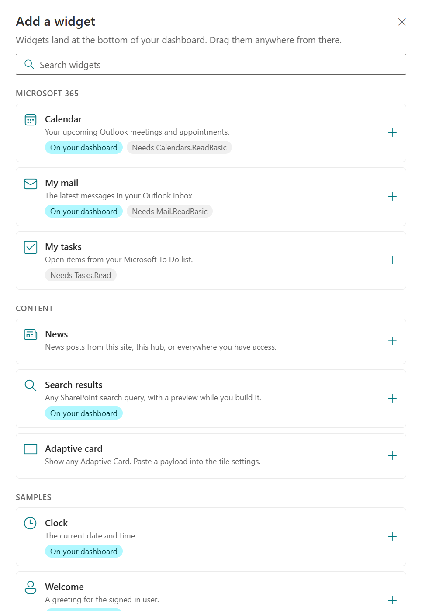
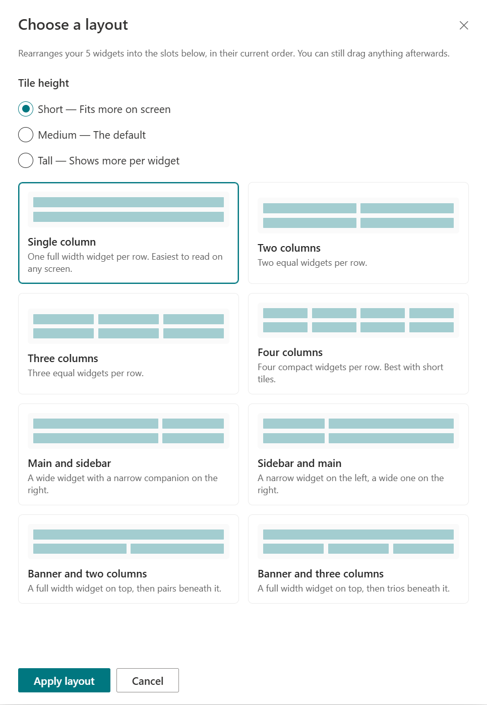

A personal front door to Microsoft 365
Your day.Your layout.
Today intranet turns a SharePoint page into a dashboard people can make their own.
Product tour Technical architecture Custom widgets
Application walkthrough & developer field guide
Today Edit dashboard
Calendar 09:30 Team check-in
My mail Design review
Clock 09:41
Monday, September 21
My tasks Review the proposal
News from your workplace One place for the updates, documents and links that matter to you.
Illustration / fictional content, not a live tenant screenshot
Open with the distinction between a shared page and a personal dashboard. The page author places one web part; each visitor controls their own arrangement. This is a read-oriented dashboard with links to the full Microsoft 365 experiences, not a replacement for Outlook or To Do.
The illustration uses fictional content. The catalogue and layout-picker images later in this deck were captured from the shared application on 20 September 2026, with no personal messages or documents included.
Sources: Repository README ; Web part entry point .
01 / What the application does
One page. Three responsibilities.
Bring daily information together, let people arrange it, and give developers a consistent way to extend it.
01 See what matters Surface meetings, inbox messages, tasks, news and search results in one SharePoint experience.
Open the full source application when you need to act.
02 Make it personal Add, remove, move and resize widgets. Choose views, settings and personal tile titles.
No SharePoint page-editing permission is needed to use dashboard edit mode.
03 Extend the platform Register a React widget, reuse shared content primitives, and let the dashboard host it.
The host owns the frame, layout and persistence; the widget owns its content.
Personal does not always mean cross-device: read-only visitors save in their browser; writable users can publish to SharePoint.
Suggested timing: 1 minute. There are two edit modes to distinguish: SharePoint page editing for authors, and the dashboard's own edit mode for visitors. Personal layout persistence depends on effective list permissions, not just the presence of an Edit dashboard button.
Sources: Dashboard ; Layout store .
Out of the box
Eight widgets.
A starter set, with more just a click away.
01 Microsoft 365 Calendar, My mail, My tasks.
02 Content News, Search results, Adaptive card.
03 Samples Clock and Welcome.
Multiple instances are allowed: two search widgets can have different queries, views and titles.

Current application / 20 Sep 2026. Click to enlarge.
The catalogue is generated from WidgetRegistry. It searches widget names, descriptions and keywords, groups by category, and marks types already on the dashboard. This indicator does not prevent adding a second instance.
The starter layout is three medium-height columns containing Calendar, My mail and My tasks. The screenshot reflects a user-customized dashboard, not those defaults.
Sources: Widget registry ; Catalogue ; Starter layout .
The employee journey
Arrange your workspace.
1 Edit dashboard Expose add, layout, settings and remove controls.
2 Choose a starting structure Eight presets. Three tile heights: short, medium, tall.
3 Fine-tune individual tiles Drag or resize. Tab to a title bar: arrows move; Shift + arrows resize.
4 Select Done Finish editing and request publishing to SharePoint when storage permissions allow it.
Presets rearrange existing widgets; they do not add or remove them. Manual movement switches the layout to Custom.

Current application / no layout changes were applied for this capture.
Suggested demo: open Edit dashboard, inspect Add a widget, then Choose a layout. A chosen preset remains active when adding or removing widgets; the host reflows them into its slots. Manual drag or keyboard movement disables that automatic preset behavior.
Edits are checkpointed locally before Done. Leaving the page is not Cancel: committed changes remain in the browser, even if they have not been published to SharePoint.
Sources: Edit lifecycle ; Layout presets .
Consistent by construction
Different information. The same visual language.
Collection widgets can present the same items in five views, without implementing five separate experiences.
Shared tile chrome Title, icon, refresh, personal title, settings flyout and optional footer link.
Shared data states Skeleton, empty state, actionable error, and refresh progress that keeps existing data visible.
Shared accessibility Theme-aware colors, keyboard focus, reduced motion and responsive content.
These views apply to widgets that use WidgetItems and declare supportedViews. Clock and Welcome use other primitives. The Adaptive Card view converts ordinary item data into a card; the separate Adaptive card widget accepts a card JSON payload.
Sources: WidgetItems ; WidgetView ; Shared visuals .
02 / How it works
A client-side host, not a separate backend.
SharePoint supplies identity, context and hosting. React supplies the dashboard. Widgets talk to existing services.
SharePoint page
SPFx web part Context, theme, title, dashboard ID and starter layout.
passes context & store →
Technology stack SPFx 1.23.2
Browser / React
Dashboard Edit state, responsive grid, presets and one layout write path.
WidgetRegistry → WidgetFrame Resolve a type; supply chrome, settings, refresh and an error boundary.
Widget content + shared primitives Render data, not custom dashboard infrastructure.
Data & persistence
Microsoft Graph Calendar, mail, To Do
SharePoint REST Search / news
Browser storage Local layout checkpoints
The right-hand nodes are separate paths: data widgets use Graph or SharePoint search, while Dashboard writes layout documents through ILayoutStore. The repository contains no custom server API. In-memory fetched data and persistent browser layout recovery have different purposes and lifetimes.
The manifest declares SharePoint web-part/full-page and Teams hosts. This presentation demonstrates the SharePoint communication-site experience; it does not claim Teams deployment was validated.
Sources: Dependencies ; Entry point ; Dashboard ; Registry .
The core data model
The layout is data. A widget type is code.
Each saved instance references a registered type and carries its own placement, title and settings.
Illustrative IDashboardLayout / schema version 2
{
"version": 2,
"presetId": "three",
"rowSizeId": "medium",
"widgets": [{
"id": "calendar-1",
"type": "m365.calendar",
"title": "My upcoming week",
"x": 0, "y": 0,
"w": 4, "h": 6,
"settings": { "daysAhead": 7 }
}]
}
A canonical 12-column grid
Desktop geometry is the source of truth. Smaller breakpoints derive 8, 6, 4 or 2 columns by clamping widths.
A stable identity boundary
id identifies one placed tile.type resolves its implementation.settings belongs to that instance.
Only the widest breakpoint saves grid geometry, so a phone visit cannot overwrite the desktop arrangement.
The example shows one entry for readability. Preset metadata and widget geometry are stored together. Version 1 and version 2 layouts are supported; invalid or unsupported future layouts are preserved and routed to recovery rather than silently replaced.
Breakpoint widths are 1200, 996, 768, 480 and 0 pixels; the canonical row height is 56 pixels. Widget definitions can set minimum size constraints.
Sources: Layout interfaces ; Layout decoder ; Grid behavior .
Persistence lifecycle
Checkpoint locally. Publish on Done.
A layout includes geometry, personal titles, widget settings and preset choices.
1 / LOAD Resolve scope Site + web + dashboard ID + user identity select the personal layout.
2 / EDIT Save a checkpoint Committed changes are written immediately to scoped browser storage.
3 / DONE Request publish Close draft settings first, then serialize the cloud write if the user can write.
4 / RECOVER Resolve explicitly ETag conflicts and divergent drafts prompt a choice, not a silent overwrite.
Writable user Hidden TodayIntranetLayouts list in the hosting web.Title = dashboard ID + login; LayoutJson = document.
Read-only visitor Browser-only layout, explicitly labeled. No automatic write grants.
A dashboard ID defaults to "default". Pages in the same web with the same dashboard ID share a user's arrangement. Giving another dashboard a different ID creates a separate scope. Changing it redirects users to a different set of layouts.
Clean cloud-validated layout cache: 5 minutes. Verified list configuration and capability cache: 1 hour. Retry bypasses both. Temporary failures have at most three automatic retries with backoff/jitter and Retry-After handling. Local quota and policy errors are surfaced.
ETags protect updates; simultaneous first creates can still produce duplicates because Title is indexed but not unique with own-item access. The application detects the race and asks for reconciliation. Hiding the list is not a security boundary; own-item access uses Created By, and elevated admins can still read items.
Sources: Store contract ; Store implementation ; SharePoint client .
Integration & freshness
Two live data paths. One rendering contract.
Source Used by Access model Data cache TTL
Microsoft Graph My mail Mail.ReadBasic3 minutes Microsoft Graph Calendar Calendars.ReadBasic5 minutes Microsoft Graph My tasks Tasks.Read10 minutes SharePoint Search REST News, Search results Signed-in user; security-trimmed 15 minutes
Reuse identical requests Shared in-memory cache and in-flight deduplication across web-part instances on the page.
Scope the cache Tenant, user, site, web, source and normalized request parameters are part of the identity.
Refresh intentionally The tile's refresh action bypasses fresh cached data. Existing content remains visible during refresh.
These are freshness durations, not background polling intervals. The data cache is module-level and memory-only: it is not an offline database and is separate from layout checkpoints in localStorage. Successful empty responses are cached too.
Search combines fixed widget KQL, selected scope and user terms. News uses PromotedState:2. Search results requires terms. The settings preview uses the same effective query and request cache as the tile.
Sources: Cache ; Graph hook ; Search hook ; Permission requests .
Trust & deployment boundaries
Permissions are part of the design.
The app runs as the signed-in user. A widget never creates permission just by declaring that it needs it.
A Graph consent Requested in the solution package and approved in SharePoint admin center → API access.
The catalogue's permission label is guidance, not the consent mechanism.
B SharePoint access Search results are trimmed to the current user. Layout writes require effective list permissions.
A site owner can provision the layout list; ordinary visitors are not promoted to writers.
C Least privilege Basic mail and calendar metadata is sufficient for these tiles. No message or event bodies are requested.
SPFx grants are shared through the tenant's client-extensibility principal, not isolated to one widget.
Keep credentials and secrets out of widget settings. Settings are personal configuration, not a secret store.
Explain that the custom-widget registry is a build-time extension point, not a runtime marketplace for untrusted code. A custom React widget executes inside the web part's client-side context. The error boundary contains rendering failures, not malicious code.
Permissions requested by the package are Calendars.ReadBasic, Mail.ReadBasic and Tasks.Read. New data access may require a new permission request and a fresh tenant approval. Search and local sample widgets need none of these Graph grants.
Sources: Package permissions ; List access model ; Microsoft Learn: MSGraphClient .
03 / How to add custom widgets
Two extension paths. Different jobs.
Use a card payload for authored content. Use a registered React widget for new behavior and data integrations.
Configuration Adaptive card payload Add the existing Adaptive card widget. Paste a valid Adaptive Card JSON payload in its settings. Render text, facts, imagery and supported card actions. No new package for a payload-only change. Rendering is not a backend: submit/execute actions need an explicit handler and service integration.
Development Custom React widget Create a component that accepts IWidgetContext. Reuse shared content and settings primitives. Register a stable IWidgetDefinition. Build, package and redeploy the SPFx solution. No Dashboard changes are needed for a normal widget. The registry is the extension seam.
The built-in Adaptive card widget parses its stored JSON and guides authors to schema 1.5 or lower. OpenUrl actions are handled by the shared renderer; Submit is forwarded only when an onSubmit handler is supplied. There is no automatic form-submission backend or built-in Execute handler. Use approved destinations and validate any integration you add.
The next slides build a small Useful links widget with per-instance settings. It is an instructional example only; this presentation does not add it to the deployed application.
Sources: Adaptive card widget ; Card renderer ; Widget contract .
Extension step 1 / Understand the boundary
Implement content. Receive the platform.
The definition describes the widget
type: stable persisted identifier.Name, description, icon, category and search keywords.
Default/minimum grid size and supported views.
render(context): React content.renderSettings(context): optional settings UI.Optional refresh, permission hint and footer link.
The context describes this instance
instanceId: which placed tile is rendering.settings: this tile's configuration.spContext: SPFx identity and service clients.isEditing: dashboard edit state.refreshToken: changes when refresh is requested.updateSettings(...): the host's save path.
Do not implement another drag handle, layout store or theme system. WidgetFrame and the shared primitives already provide them.
Do not rename a shipped type key: saved layouts reference it. Widget instance IDs are different from type keys, so multiple copies of one type can coexist. New instances begin with empty settings; components must supply defaults.
The registry category values are microsoft365, content and demo. The host maps them to user-facing headings. WidgetErrorBoundary contains rendering failures but is not a security sandbox. Removed types remain in saved layouts and show an unavailable state.
Sources: IWidgetDefinition and IWidgetContext ; WidgetFrame .
Extension step 2 / A small, useful tile
Build a Useful links widget.
Read settings, validate the URL, map to an item, and let the shared renderer handle presentation.
UsefulLinksWidget.tsx / rendering excerpt
const items: IWidgetListItem[] = [{
key: 'team-link',
title: textSetting(context, 'linkLabel',
DEFAULT_LABEL),
href: url,
iconName: 'Link',
tone: 'accent'
}];
return <WidgetItems
items={items}
view={viewSetting(context,
USEFUL_LINKS_DEFAULT_VIEW)}
ariaLabel="Useful links" />;
Place the component here
src/webparts/todayIntranet/widgets/custom/UsefulLinksWidget.tsx
Imports come from ../IWidget and ../content. The complete example includes those imports and the component wrapper.
Defaults + validation
Starts with the hosting site's URL. Invalid or non-HTTPS links display a shared error message instead of a clickable link.
Download the complete TSX example
This is a teaching example, not a widget installed by the presentation.
The code shown is the rendering portion of the complete downloadable component. parseLinkUrl uses the URL parser and accepts only absolute HTTPS URLs with no embedded credentials. Invalid settings produce WidgetErrorMessage with isActionRequired: true. It does not silently fall back to another destination.
The stable item key identifies the logical link even when its destination changes. This synchronous widget needs no Graph permission, network hook or refresh button. For asynchronous data, use WidgetView as shown conceptually in the data-driven-widget slide.
Save the download at the displayed source path, not inside the presentation directory. The .txt extension keeps the teaching file out of application compilation until intentionally installed.
Sources: Complete teaching example ; Item contract ; Collection renderer .
Extension step 3 / Configuration without new infrastructure
Settings use the same save path.
The host passes the same instance context to the widget and its settings flyout.
UsefulLinksWidgetSettings / JSX body
<SettingsSurface
description="Configure this tile's link.">
<TextSetting
context={context}
settingKey="linkLabel"
label="Link label"
fallback={DEFAULT_LABEL}
maxLength={120} commitOn="blur" />
<TextSetting
context={context}
settingKey="linkUrl"
label="Link URL"
fallback={context.spContext
.pageContext.web.absoluteUrl}
maxLength={2048} commitOn="blur" />
</SettingsSurface>
Reuse typed controls
TextSetting manages drafts and preserves other settings. Use the provided numeric and boolean settings helpers for those types.
Keep settings instance-local
Two Useful links tiles can point to different destinations. The personal tile title is handled separately by WidgetFrame.
If you call updateSettings yourself, pass the full next object: spread existing settings so you do not erase view or other values.
The full component download exports UsefulLinksWidgetSettings with the required React.FunctionComponent wrapper. The slide shows its JSX body to focus on the contract. commitOn="blur" avoids saving each partially typed URL. Settings dismissal and Done commit final drafts through the host's existing lifecycle.
Never put access tokens, secrets or large fetched datasets in settings: they are persisted with the personal layout and may appear in recovery exports. The example's HTTPS restriction is validation, not a guarantee that a destination is organizationally approved; an organization may add an allowlist.
Sources: Complete example ; Settings primitives ; Settings persistence .
Extension step 4 / Wire the catalogue
One definition makes the widget discoverable.
WidgetRegistry.tsx / append to definitions array
{
type: 'custom.usefulLinks',
displayName: 'Useful links',
description: 'A personal HTTPS shortcut.',
iconName: 'Link',
category: 'content',
keywords: ['team', 'shortcut', 'link'],
defaultSize: { w: 4, h: 4 },
minSize: { w: 2, h: 3 },
supportedViews: [
'list', 'compact', 'cards', 'gallery', 'adaptive'
],
defaultView: USEFUL_LINKS_DEFAULT_VIEW,
render: context =>
<UsefulLinksWidget context={context} />,
renderSettings: context =>
<UsefulLinksWidgetSettings context={context} />
}
Import the three exports first
UsefulLinksWidget, UsefulLinksWidgetSettings and USEFUL_LINKS_DEFAULT_VIEW come from ./custom/UsefulLinksWidget.
Use the existing array
The registry builds its lookup map from definitions. There is no runtime register() call to invent.
Download the import + array entry
Do not change STARTER_LAYOUT unless every new user should receive this widget by default.
The downloaded registry snippet is an insertion guide, not a replacement for WidgetRegistry.tsx. Add the import, then append the object inside definitions: IWidgetDefinition[]. Its supported views match WidgetItems and viewSetting in the example component.
Pick a unique stable type key. Changing displayName is different from renaming type: persisted layouts resolve by type. Existing user layouts are not changed by registering a new definition; the widget simply becomes available to add.
Do not mark this static link widget isRefreshable. A refresh affordance is appropriate only when a widget actually responds to refreshToken or the data hook that observes it.
Sources: Registry insertion example ; Actual registry ; Starter layout .
Extension step 5 / Connect live information
A data widget is a query plus a mapping.
QUERY Use the hook useGraphData for Graph; useSearchData for SharePoint Search.
STATE Use WidgetView Loading, error, empty and refresh states come from one shared implementation.
MAP Create items Map your domain objects into stable IWidgetListItem keys, titles and metadata.
RENDER Use WidgetItems Render the selected view. Let the common theme and interaction patterns do the rest.
Make request identity explicit Graph cache keys use scope + dependencies, not the fetcher function. Include a stable operation key and every query-changing setting in deps.
Wire permission + refresh Request any new Graph scope in the package. Add the catalogue hint. Set isRefreshable when the hook handles refreshToken.
For example, a new Graph query can use dependencies such as ['team-links:v1', maxItems, filter]. The unique operation string is important: two fetcher implementations using the same scope and identical dependencies otherwise share a cache key. Function identity is intentionally not part of the key, so inline fetchers do not trigger repeated requests.
Reuse the bounded in-memory cache through existing hooks. Do not store fetched mail, events or documents in widget settings. The host already supplies refreshToken, and the hooks handle stale response suppression and consent-aware errors.
The new widget should supply loading and empty descriptions through WidgetView. Use explicit requiredPermission metadata for the catalogue, but remember actual consent comes from webApiPermissionRequests and tenant approval.
Sources: Graph hook signature and request identity ; Working data widget ; Shared data states .
From code to a usable widget
Ship through the existing SPFx pipeline.
Repository commands / Node 22.14+ within 22.x
npm install
npx heft trust-dev-cert
npm start
# Production tests, build and packaging
npm run build
Heft toolchain, not gulp.config/serve.json.
1 Test the contract Render, settings, refresh, empty/error states and minimum tile sizes.
2 Deploy the package Upload sharepoint/solution/todayintranet.sppkg to the tenant app catalog.
3 Approve new permissions Review API access if the new widget introduces a Graph scope.
4 Validate in SharePoint Place in a full-width communication-site section. Test owner, member and visitor behavior.
The repository engine range is >=22.14.0 <23.0.0. The certificate step is needed on a new development machine. npm run build runs heft test --clean --production followed by heft package-solution --production. No dependency install or app deployment is required just to open this presentation.
The package has includeClientSideAssets and skipFeatureDeployment enabled. Tenant-wide availability does not mean the web part is automatically placed on pages. The manifest supportsFullBleed flag enables full-width sections on communication sites.
Existing persistence, settings, data-hook and error-state tests provide patterns. Tenant validation is still needed for real consent, ETags and list item access.
Sources: Build scripts ; Package configuration ; Manifest .
Prove the integration, not just the happy path
A widget is done when it behaves like the host.
Experience Find it by name and keywords. Add two independent instances. Try narrow and minimum tile sizes. Check keyboard focus and dark theme. Change view and personal title. Data Loading, empty and error states. Missing consent and throttling. Refresh without blanking content. Settings alter the query/cache key. Unmount without stale updates. Persistence Settings survive reload locally. Done publishes for writable users. Visitors see browser-only status. Test another tab and device. Export before destructive recovery.
Live demo sequence: add → configure → change view → resize → Done → reload.
Suggested timing: 2 minutes, or a 3-minute live demo. Use a non-production test dashboard for changes. Pick one data widget and the sample custom widget if it has been installed. Explicitly point out storage status before and after Done.
This is a validation checklist, not a statement that all tenant scenarios have been exercised in creating the deck. Source-level tests do not establish real SharePoint permissions or concurrent-create behavior.
Sources: Validation and rollout guidance ; Hook tests ; Persistence tests .
The mental model to keep
The host owns the experience.The widget owns the value.
For employees A personal starting point for the day, inside the intranet they already use.
For platform teams SharePoint identity, explicit permissions and deliberate layout persistence.
For developers A typed contract, shared primitives and one registry entry to introduce a widget.
Start small: build a useful tile, reuse the host, then connect real data.
Close by asking the audience to identify one employee need that can be met by a small widget. Keep the first implementation read-only and narrowly scoped; add richer integration only when the contract, permissions and user value are clear.
All features described in the product and architecture sections are grounded in this repository. The custom Useful links component is a proposed teaching example, not an installed widget.
Keep this slide for the handover
Where to go next.
Product & architecture
Build a widget
Navigate with arrows or Space. N opens speaker notes and per-slide sources; O opens the overview; F toggles fullscreen. Use Print / PDF to export every slide.
Offline-ready HTML, CSS and JavaScript. Source links work from the repository; Microsoft Learn links need internet access. Keep the presentation folder together when sharing.
Deck prepared against the repository and shared browser on 20 September 2026. Screenshot provenance: cropped widget catalogue and layout picker from the running application. No inbox or document-result screenshots were saved. The shared page was returned to view mode without applying layout changes or publishing drafts.
Presentation files are plain HTML/CSS/JavaScript with local images and no remote runtime dependencies. Speaker notes include additional engineering caveats. Printing excludes the controls and notes.